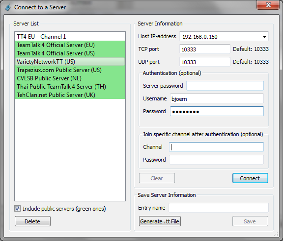

TeamTalk 4 Help
Home
TeamTalk 4 Help
Home
.tt Files and tt:// URLs for TeamTalk
Servers
It is sometimes difficult to explain novice TeamTalk users how they
should connect to a TeamTalk server and join a channel. For this reason
it's possible to make a so-called .tt files and tt URLs
which automates this
process. A .tt file is a file which is associated with
the TeamTalk
application, so when a users double-clicks the file it bring up
TeamTalk which will then connect to the server. A tt://
URL is a link which can be put on a HTML page and once clicked will
launch TeamTalk which will connect to the server.
.tt files and tt:// URLs are explained the
following sections:
Generate .tt File
To generate a .tt file bring up the Connect dialog by pressing
F2. Fill out the fields which are required to connect to the TeamTalk
server like in the example below:

When all the required information has been put in press the button Generate
.tt File. TeamTalk
will now ask where to store the file. Once the file has been stored on
disk you can send the .tt file to other users, so they can connect to
the same server.
tt:// URL
An <a href=".... tag on a HTML page can be used to
launch the TeamTalk application and make it connect to the server
specified. Here is an example:
<html>
<title>My
TeamTalk Server Website</title>
<body>
Click <a
href="tt://teamtalk.dyndns.dk?tcpport=10333&udpport=10333&username=guest&password=guest">here</a> to join my TeamTalk Server.
</body>
</html>
A tt:// URL supports the following properties:
- tcpport
- udpport
- srvpasswd
- username
- Username for user account
- password
- Password for user account
- channel
- The channel to join after login
- chanpasswd
- Password of the channel to join
All the above properties are optional. If they're not specified the
TeamTalk client will connect using the default TCP and UDP ports. Click
here
to try the above tt:// URL